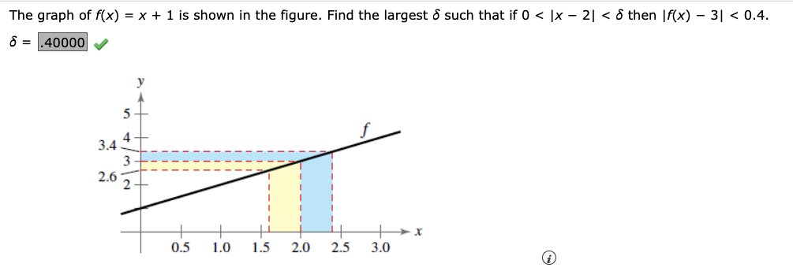

Math 271 Test 1 Problems
HARD LIST
2.2 #5,6 Worst, don’t get. Was able to do #6 practice another successfully though. 2.3 #12 More practice may sove 2.3 # 13 Do one or two more, it’s OK, see below 1st 2.4 # 11 – got right but don’t understand why 2.5 # 4 is a trick question! See below. There’s only one root that doesn’t end up with 0/0. 2.5 # 5 vertical asymptotes of exponential functions, redo and redo practice another.
For this section see notes 1/23/24
Find:
From class 9/23:
Tables are now easy, but rounding is an issue.
From 2.2
#1 Practice another
Find this limit with a table, round to 5 decimal places $\( \lim_{x \to 0} \frac{9\space\sin x}{x} \)$
Use graph to find limit, with graph of vert asmyptote given. Easy.
HARD:
The next two I really don’t understand yet. See class notes. Try also this video
With jump \(Left \neq Right\), easy.

Set 2.1 practice another for #6 gives
Consider the following limit:
Find the limit
Find \(\delta > 0\) such that \(|f(x) -L| < 0.01\) whenever \(0 < |x -2| < \delta\). Round to 5 decimal places.
Find \(\delta > 0\) such that \(|f(x) -L| < 0.005\) whenever \(0 < |x -2| < \delta\). Round to 5 decimal places.
2.2 # 8
What is \(f(x) = 7\) as x approaches \(\pi\)? Easy.
2.3 1-2 substitution limits, easy.
#3 practice another
Easy, but do we need to show anything special for #3?
Given $\( f(x) = 2x^2 - 3x + 14,\space g(x) = \sqrt[3]{x + 4} \)$
Find:
\(\lim \limits_{x\to 3} \space f(x)\)
\(\lim \limits_{x \to 23} \space g(x)\)
\(\lim \limits_{x \to 3} \space g(f(x))\)
2.3 # 6 practice another easy, not here. # 8 also easy, not here # 9 also easy. This time needed to multiply by the conjugate. Here’s that problem. Find:
For this section see notes 1/24/24
2.3 # 10 practice another
Find the limit or DNE.
Simplify and cancel to 5. Fairly easy.
For this one fairly easy, recall special case of \(\frac{\sin x}{x} = 1\)
Number 12 Practice Another (Do via graph, table, and analytically)
REWORK this. Had issues.
Number 13 Practice Another:
Given \(f(x) = 2x^2 - 3x\), find the limit as x approaches zero, given \(\delta x = h\),
Note that the correct answer at the end of the day equals \(f'\) or \(\frac{dy}{dx} f\), so \(4x - 3\), but done algebraically it’s unclear when to finish crossing out. It looks like you end up crossing off all the h terms, and whatever is left still multiplies by h goes away because you sub zero at that point, thus:
2.3 # 14 easy enough.
2.3 Practice another #15:
Easy enough second time too.
On to exercise set 2.4
2.4 # 1,2,4,5,7,9,10,12,13,14 easy enough
Number 3 was this one:
OK, DNE, can show from left and right using table to prove.
#6 Practice another:
Find the constant a such that fn is continuous on entire real number line.
Pretty easy – set both sides equal @ 1 and substitue and solve.
Number 8 Describe intervals where fn is continuous:
Got wrong the first time, don’t flip secant, just solve like this:
Number 11 of 2.4 is this. Find the limit if it exists).
Got DNE. Not sure how I got that though. At \(x=8\) that’s certainly a problem, but approaching it?
WebAssign 2.5 reviewed 1/25
Easy ones are: 1, 2, 3 (easy, table), 6 a little thought but not bad,7. 8 not bad but heavy calculator. 9 easy, read problem. 10 easy (mass of a particle, fun.), 11, 12 easy problems that look hard with exponents. 13 and 14 easy.
3 Practice another for table practice
Make table given: -5.5 -5.1 -5.01 -5.001 -4.999 -4.99 -4.9 -4.5
Number 4 practice another:
Answer given is only -5, not plus 5. Why?? To make numerator non-zero? Yes, remember \(\frac{0}{0}\) is a removable discontinuity, not a vertical asymptote!
Section 3.1 reviewed 1/26
Easy: 1 was trivial but did two other “long” ways for fun (linear fn, slope is m term). 2 easy, also done in class.
3 was hard but relates to one done in class. In class we did use the limit process (deriv definition) to find f’ of \(f(x) = \frac{1}{x -1}\).
Number 3:
Use the limit process to find the derivative of the function.
\(f(x) = \frac{7}{x^2}\) Did this one today (1/26/24), do the next one.
Number 3 practice another: Use the limit process to find the derivative of the function.
\(f(x) = \frac{9}{x^2}\)
4 practice another: Find the equation of a tangent line to the given function at the point (4,2):
\(f(x) = \sqrt{x}\)